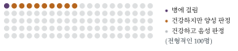

STEP II 1998, 문제 12
계속 읽기 전에 문제를 먼저 읽어 보자. 문제는 STEP Support Programme의 문제 데이터베이스에 있다: step.maths.org/questions/98-s2-q12
도입
어떤 질병 검사가 그 병에 걸린 사람에 대해서는 \(90\%\) 정확하고, 잘못된 경보는 거의 내지 않는다고 하자. 프랭키가 양성 판정을 받았다. 프랭키는 얼마나 걱정해야 할까? 대부분의 사람들은, 그리고 여러 연구에 따르면 대부분의 의사들도, “약 \(90\%\)”라고 답한다. 이 문제에서 참된 답은 \(\frac{1}{11}\), 즉 약 \(9\%\)이다. 열 배나 작다.
이런 실수는 기저율(base rate)을 무시하는 데서 나온다. 이 병은 드물기 때문에, 수많은 건강한 사람들 사이에서는 위양성(false positive) 비율이 작더라도 실제 환자 수보다 훨씬 많은 잘못된 경보가 나온다. 이러한 기저율 오류(base-rate fallacy)는 의학, 법률(법률에서는 검사의 오류(prosecutor’s fallacy)라고 부른다), 보안 검색, 기계 학습에서 중요한 문제이다. 베이즈 정리(Bayes’ theorem)가 그 처방이다.
시작하기 전에
\(1000\)명의 사람을 떠올려 보자. 그중 몇 명이 병에 걸렸는가? 그중 몇 명이 양성 판정을 받는가? 건강한 사람 중에서는 몇 명이 양성 판정을 받는가?
\(1000\)명 가운데 \(10\)명이 병에 걸렸고, 그중 \(9\)명이 양성 판정을 받는다. 건강한 \(990\)명 가운데 \(\frac{1}{11}\)이 양성 판정을 받으므로 위양성은 \(90\)명이다. 따라서 양성 판정을 받은 사람은 \(99\)명이고, 그중 실제로 아픈 사람은 \(9\)명뿐이다.
차근차근 풀기
단계 1 베이즈 정리
“프랭키가 병에 걸렸다”를 \(D\), “AL 검사 결과가 양성이다”를 \(+\)로 나타내자. 우리는 \(\mathrm{P}(+ \mid D)\)를 알고 있고 \(\mathrm{P}(D \mid +)\)를 구하려 한다. 둘은 어떤 관계인가?
조건부확률(conditional probability)의 정의에 따라 \(\mathrm{P}(D \mid +) = \frac{\mathrm{P}(D \cap +)}{\mathrm{P}(+)}\)이고, \(\mathrm{P}(+)\)는 프랭키가 병에 걸렸는지 아닌지에 따라 나누어진다. \[\begin{aligned} \mathrm{P}(D \mid +) &= \frac{\mathrm{P}(+ \mid D)\mathrm{P}(D)}{\mathrm{P}(+ \mid D)\mathrm{P}(D) + \mathrm{P}(+ \mid \bar D)\mathrm{P}(\bar D)} \\ &= \frac{0.9 \times 0.01}{0.9 \times 0.01 + \frac{1}{11} \times 0.99} = \frac{0.009}{0.009 + 0.09} = \frac{1}{11}. \qed \end{aligned}\] 이것이 바로 천 명의 사람에서 얻은 \(\frac{9}{99}\)이다.
단계 2 두 번째 검사
두 번째 검사는 AL에서 양성 판정을 받은 사람들에게만 실시한다. 그 집단에서 환자의 비율은 얼마인가? 그것을 새로운 “기저율”로 사용하라.
AL에서 양성인 사람들 가운데 \(\frac{1}{11}\)은 환자이고 \(\frac{10}{11}\)은 환자가 아니다. 이것을 사전확률(prior probability)로 삼아 베이즈 정리를 다시 적용하면 \[\mathrm{P}(D \mid \text{두 검사 모두 양성}) = \frac{0.9 \times \frac{1}{11}}{0.9 \times \frac{1}{11} + p \times \frac{10}{11}} = \frac{0.9}{0.9 + 10p}.\] 이 값을 \(\frac12\)로 놓으면 \(10p = 0.9\)이므로 \(p = 0.09\)이다.■
(문제에서 암묵적으로 가정하듯이, 프랭키가 아픈지 아닌지가 주어졌을 때 두 검사의 오류는 서로 독립(independent)이라고 가정한다.)
\(p = 0.09\)이면 STEP 검사의 위양성 비율은 AL과 거의 같은데도, 두 번째 양성 결과는 확률을 \(\frac{1}{11}\)에서 \(\frac12\)로 끌어올린다. 똑같은 수준의 검사가 두 번째에는 왜 훨씬 큰 효과를 낼까?

돌아보기
자연 빈도(natural frequencies). \(1000\)명의 사람을 떠올리자 답이 분명해졌고 확인하기도 쉬웠다.
사전확률 곱하기 가능도. 사후확률(posterior probability)은 검사의 정확도와 기저율 둘 다에 달려 있다.
단계별 갱신. 어제의 사후확률이 오늘의 사전확률이다. 두 번째 검사는 \(\frac{1}{100}\)이 아니라 \(\frac{1}{11}\)에서 출발했다.
숨은 수학
오즈와 증거
베이즈 정리는 오즈(odds)로 나타낼 때 가장 명료하다. \(D\)의 오즈는 \(\mathrm{P}(D) : \mathrm{P}(\bar D)\)이다. 하나의 증거 \(E\)는 오즈에 가능도비(likelihood ratio) \(\frac{\mathrm{P}(E \mid D)}{\mathrm{P}(E \mid \bar D)}\)를 곱한다. \[\text{사후 오즈} = \text{사전 오즈} \times \text{가능도비}.\] 여기서 사전 오즈는 \(1 : 99\)이고 AL의 가능도비는 \(0.9 \div \frac{1}{11} = 9.9\)이므로, 사후 오즈는 \(9.9 : 99 = 1 : 10\), 즉 확률로는 \(\frac{1}{11}\)이다. 가능도비가 \(10\)인 두 번째 독립적인 검사(\(p = 0.09\)인 STEP 검사가 그렇다)는 오즈를 \(1 : 1\)로 만든다. 로그(logarithm)를 취하면 증거는 더해진다. 즉 각각의 독립적인 검사는 자신의 가능도비의 로그만큼 기여한다. 앨런 튜링(Alan Turing)은 바로 이 방법을 사용해 증거를 “밴(ban)”과 “데시밴(deciban)” 단위로 측정하며 블레츨리 파크(Bletchley Park)에서 에니그마 암호문을 해독했다.
검사의 오류
1999년, 사무 변호사(solicitor) Sally Clark는 두 아기 아들을 살해한 혐의로 유죄 판결을 받았는데, 그 근거의 일부는 한 가정에서 영아 돌연사(cot death)가 두 번 일어날 확률이 “7300만분의 1”이라는 증거였다. 그 수치 자체의 오류(두 죽음이 독립이라고 가정하여 유전적·환경적 요인을 무시했다)는 제쳐 두더라도, 그 추론은 \(\mathrm{P}(\text{증거} \mid \text{무죄})\)와 \(\mathrm{P}(\text{무죄} \mid \text{증거})\)를 혼동했다. 어머니가 두 아이를 살해하는 일 역시 극히 드물며, 따져야 할 것은 두 설명 사이의 비교이다. 영국 왕립통계학회(Royal Statistical Society)는 공개 서한을 보내 이 오류를 지적했고, 그녀에 대한 유죄 판결은 2003년에 뒤집혔다. 그 수학은 바로 이 문제의 수학이다.
1990년대에 심리학자 게르트 기거렌처(Gerd Gigerenzer)는 검사 통계를 조건부확률의 형태로 제시받은 의사들이 이 문제와 같은 질문에서 대부분 크게 틀렸지만, 같은 정보를 자연 빈도의 형태(“여성 \(1000\)명 가운데 \(10\)명이 유방암에 걸렸고, 그중 \(8\)명이 양성 판정을 받는다…”)로 제시받으면 대부분 맞힌다는 것을 보였다. 그의 연구는 여러 나라에서 의학적 위험을 환자에게 전달하는 방식을 바꾸어 놓았다.
사고 기술
\(\mathrm{P}(A \mid B)\)와 \(\mathrm{P}(B \mid A)\)는 서로 다른 수이다. 한쪽에서 다른 쪽으로 가려면 기저율 \(\mathrm{P}(A)\)가 필요하다.
베이즈 추론, 즉 증거에 비추어 믿음을 갱신하는 것은 스팸 필터에서 의학적 진단에 이르기까지 현대 통계학과 기계 학습의 토대이다. 대학에서는 하나의 확률 대신 사전분포와 사후분포를 다루는 베이즈 추론(Bayesian inference)으로 이것을 만나게 된다.
더 도전하기
냉장고 속 시체. STEP II 1987, 문제 16에 도전해 보자. 신뢰도가 서로 다른 두 목격자가 등장하는 베이즈 정리 문제로, STEP 문제 가운데서도 손꼽히게 기억에 남는 설정이다.
얼마나 드물어야 할까? 민감도(sensitivity)가 \(0.9\)이고 위양성 비율이 \(\frac{1}{11}\)인 검사에서, 양성 결과가 병에 걸렸을 가능성이 절반보다 크다는 뜻이 되려면 그 병은 얼마나 흔해야 하는가?
검사를 반복하기. AL 검사 자체를 반복하고, 그 사람의 실제 상태가 주어졌을 때 결과들이 서로 독립이라면, AL에서 두 번 양성 결과가 나온 뒤 병에 걸렸을 확률은 얼마인가? 세 번이라면?
선별 검사. 어떤 선별 검사 프로그램이 유병률(prevalence)이 \(10\,000\)명 중 \(1\)명인 질환에 대해 백만 명을 검사한다. 사용하는 검사의 민감도는 \(99\%\)이고 위양성 비율은 \(1\%\)이다. 그 질환이 있을 수 있다는 통보를 받는 사람은 몇 명이며, 그중 실제로 질환이 있는 사람은 몇 명인가?
더 읽을거리
Gerd Gigerenzer, Reckoning with Risk (Penguin). 자연 빈도, 의학 검사, 그리고 법정.
David Spiegelhalter, The Art of Statistics (Pelican). 의학적 선별 검사와 Sally Clark 사건을 다룬다.
Sharon Bertsch McGrayne, The Theory That Would Not Die (Yale University Press). 튜링의 활용을 포함한 베이즈 정리의 역사.